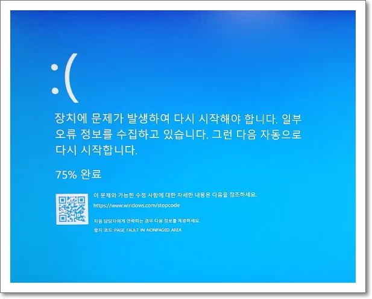
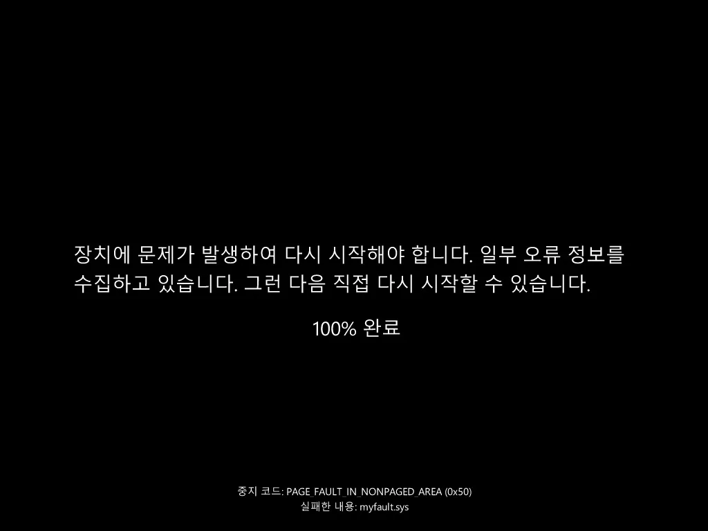

에러 코드 상세
0x00000050 · PAGE_FAULT_IN_NONPAGED_AREA
페이지 아웃되지 않는 영역에서 유효하지 않은 시스템 메모리를 참조했다는 코드입니다. 문서는 결함 있는 드라이버·시스템 서비스, 백신, 손상된 NTFS 볼륨, 고장 난 램을 원인으로 듭니다.

위 화면은 슬픈 얼굴과 QR 코드가 있는 예전 모양의 파란 화면입니다. 최신 Windows 11(26H2)에서는 아래처럼 검은 화면으로 표시되고 QR 코드가 없지만, 중지 코드와 "실패한 내용"으로 원인을 좁히는 방식은 같습니다. 아래는 테스트용 가상 머신에서 Sysinternals NotMyFault로 일부러 일으킨 화면이라 실패한 내용에 이 도구의 드라이버(myfault.sys)가 표시되었으며, 실제 장애에서는 원인이 된 드라이버 파일 이름이 나옵니다.

드라이버 결함과 램 불량이 가장 흔한 두 원인으로 꼽힙니다.
이 코드를 어떻게 해석해야 하나요?
주소가 단순히 잘못됐거나 이미 해제된 메모리를 가리킬 때 나오는 코드입니다. Microsoft Learn은 원인으로 결함 있는 시스템 서비스나 드라이버 코드, 바이러스 백신, 손상된 NTFS 볼륨을 들고, 새로 설치한 하드웨어나 이미 설치된 하드웨어의 고장도 원인이 될 수 있다고 합니다. 하드웨어는 보통 주 메모리, L2 캐시, 비디오 메모리 같은 램 계열의 결함과 관련이 있다고 설명합니다. 하나씩 끄고 켜며 원인을 가려내는 순서를 안내합니다.
가능성 높은 원인
- 결함 있는 시스템 서비스나 드라이버 코드를 설치한 경우
- 바이러스 백신이 이 오류를 일으키는 경우
- NTFS 볼륨이 손상된 경우
- 램이나 L2 캐시, 비디오 메모리 같은 하드웨어가 불량이거나 고장 난 경우
- 새로 설치한 하드웨어에 문제가 있는 경우
첫 점검 항목
- 공식 문서가 알려 주는 것: 이벤트 뷰어 시스템 로그에서 같은 시간대의 심각한 오류를 찾고, 화면이나 로그에 드라이버 이름이 있으면 제조사에 업데이트가 있는지 확인하세요.
- 공식 문서가 알려 주는 것: 시스템 서비스나 바이러스 백신을 잠시 비활성화해 오류가 사라지는지 보세요. 사라지면 제조사에 업데이트를 확인하세요. 시작 중에 나온다면 Windows 복구 옵션을 보라고 안내합니다.
- 공식 문서가 알려 주는 것: 관리자 권한 명령 프롬프트에서 chkdsk /f /r을 실행하세요. 시스템 파티션은 재시작한 뒤에 검사가 시작됩니다.
- 공식 문서가 알려 주는 것: Windows 메모리 진단으로 물리 메모리를 검사하세요. 결과는 이벤트 뷰어 시스템 로그의 MemoryDiagnostics-Results 항목에서 봅니다.
- 공식 문서가 알려 주는 것: 최근 하드웨어를 추가했다면 빼서 재현되는지 보고, 고장 난 부품은 교체하세요. 제조사 진단 도구도 쓰라고 안내합니다.
- 문서 외 일반 점검: XMP나 오버클럭을 기본값으로 되돌려 재현되는지 확인하세요.
이 오류와 가까운 증상은 질문에 답하며 해볼 것을 한 단계씩 따라 할 수 있습니다. 준비물과 자세한 방법을 보여 주고, 직접 하기 어려우면 문의로 이어집니다. 메모리 의심 블루스크린 자가진단 시작하기 →
확인 결과에 따른 다음 단계
- 메모리 진단에서 오류가 발견될 때 — 램 모듈을 하나씩 꽂아 부팅하며 오류가 나는 모듈을 찾으세요. 모듈 분리는 문서 외 일반 조치입니다. 찾은 모듈은 보증 기간 안에 교체를 신청하세요.
- chkdsk가 오류를 고쳤거나 오류를 발견했을 때 — 중요한 파일을 먼저 백업하세요. 고친 뒤에도 반복되거나 오류가 계속 나오면 저장장치 교체를 검토하세요.
- 백신이나 서비스를 끄면 사라질 때 — 해당 프로그램 제조사에 업데이트를 확인하세요. 확인용으로 끈 보호 기능은 바로 다시 켜세요.
데이터와 시스템을 보호하는 주의사항
메모리 검사가 한 번 통과했다고 즉시 정상으로 단정하지 말고 XMP·EXPO 해제 상태와 모듈별 결과를 비교하세요.
앞 단계로 해결되지 않을 때
모듈을 한 개씩 기본 속도로 장착해 슬롯을 교차하고, 안전 모드와 클린 부팅에서 같은 작업이 재현되는지 확인하세요.
시스템 복구나 초기화, 드라이버 삭제처럼 원상복구가 힘든 작업을 시작하기 전에, 중요한 파일은 미리 외장 저장장치나 별도 위치에 백업해 두세요.
같은 증상과 연결된 다른 오류 코드
- 0xC000021A · Critical System Process 종료
- 0x000000EF · CRITICAL_PROCESS_DIED
- 0x000000D1 · DRIVER_IRQL_NOT_LESS_OR_EQUAL
- 0x0000003B · SYSTEM_SERVICE_EXCEPTION
공식 참고자료
자주 묻는 질문
- chkdsk는 어떻게 실행하나요? Microsoft Learn은 chkdsk /f /r로 디스크 오류를 검사하고 고치라고 안내합니다. 시스템 파티션은 재시작해야 검사가 시작됩니다.
- 메모리 진단 결과는 어디서 보나요? 검사가 끝나면 이벤트 뷰어의 시스템 로그에서 MemoryDiagnostics-Results 항목을 찾으면 됩니다.
최종 검토일: 2026-11-20